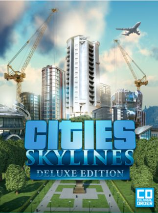

ABOUT THIS GAME
Cities: Skylines is a modern take on the classic city simulation. The game introduces new game play elements to realize the thrill and hardships of creating and maintaining a real city whilst expanding on some well-established tropes of the city building experience.From the makers of the Cities in Motion franchise, the game boasts a fully realized transport system. It also includes the ability to mod the game to suit your play style as a fine counter balance to the layered and challenging simulation. You’re only limited by your imagination, so take control and reach for the sky!
SYSTEM REQUIREMENTS
OS: Microsoft Windows XP/Vista/7/8/8.1 (64-bit)
Processor: Intel Core 2 Duo, 3.0GHz or AMD Athlon 64 X2 6400+, 3.2GHz
Memory: 4 GB RAM
Graphics: nVIDIA GeForce GTX 260, 512 MB or ATI Radeon HD 5670, 512 MB (Does not support Intel Integrated Graphics Cards)
DirectX: Version 9.0
Network: Broadband Internet connection
Storage: 4 GB available space